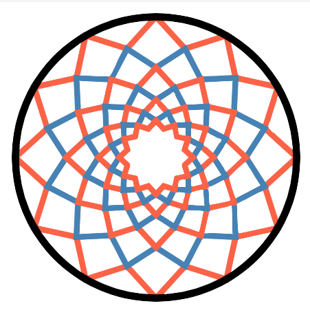

| Home | Registration | Program | Abstracts | Practical Information |
Several areas of mathematics provide useful tools for the study of quivers and associative algebras. Through three lecture series by experts and contributed talks by participants, this summer school will explore novel categorical and geometrical innovations in the field.
The school is primarily aimed towards junior particpants, i.e., PhDs and postdocs. In order to encourage more active participation by students, the first two talks of each mini-course along with the research talks are intended to be given by them. If you wish to give a talk, please find more information, along with general information for registration, here.
To download printable flyer, click on the image below.
|
|
This summer school is organized by junior faculty with links to CHARMS. The organizing committee consists of:
In case of any queries, please contact the organizers by writing to charms-summer-school@univ-grenoble-alpes.fr.
We gratefully acknowledge the funding by our sponsors.
|  |

|

|